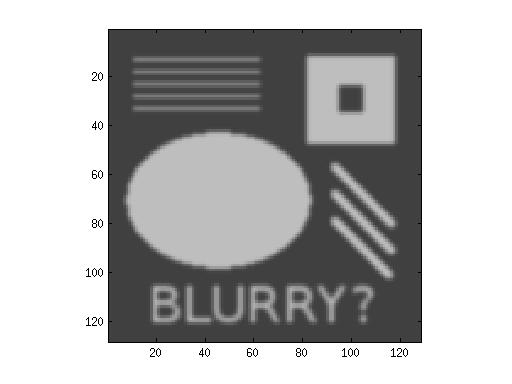

Contents
Read an image from a file
u = imread('testpat_blur2.png'); %u = imread('eye.png'); % convert image to double and scale to [0,1] u = double(u) / 255; [n,n2] = size(u); if (n ~= n2) error('by default, this only supports square images') end
Build a discrete 2D Laplace operator
e = ones(n,1); L1 = spdiags([e -2*e e], [-1 0 1], n, n); % this next line implements "Neumann boundary conditions": you could % try commenting it out. L1(1,1) = -1; L1(end,end) = -1; I = speye(n,n); L = kron(L1, I) + kron(I, L1); figure(1); clf; %pcolor(u); % try this one too imagesc(u); caxis([0 1]) colormap(gray) axis equal, axis tight % "stretch" the matrix representation of the image into one long % vector. v = reshape(u, n*n, 1); % Do 10 steps of blurring for i=1:10 v = v + 0.1*(L*v); end % convert the long vector back into a matrix ublur = reshape(v, n, n); figure(2); clf; imagesc(ublur); caxis([0 1]) colormap(gray) axis equal, axis tight
Output original and result side-by-side
You could look at the resulting file with a web browser or image viewer
result = [u ublur];
imwrite(result, 'result.png')